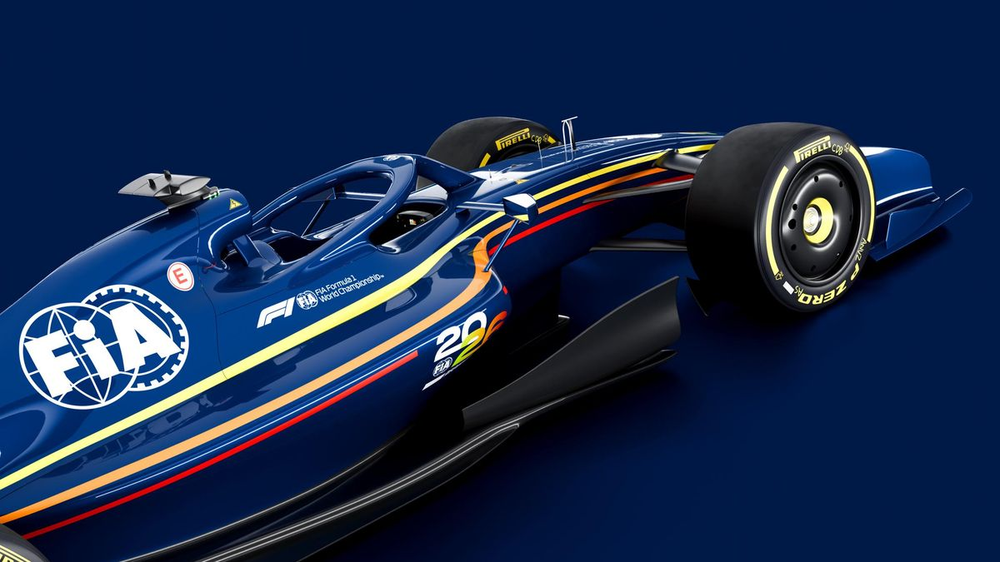

Napsal: Vojtěch Krupa
Datum: 22.4.2026
Vedení FIA oznámilo úpravy technických regulí pro sezónu 2026. Tyto změny přicházejí po prvních třech velkých cenách a hlavně reagují na velkou kritiku od stájí a jezdců na současné regule. Hlavní úpravy se týkají především hybridních pohonných jednotek. Dojde ke snížení míry rekuperace energie, aby vozy nebyly příliš omezené v maximálním výkonu na rovinkách. Zároveň se upraví využití elektrického boostu, což má zabránit výrazným rozdílům v rychlosti mezi vozy. Blížící se Velká Cena Miami se již pojede s novými pravidly. Po této změně FIA doufá, že budou jezdci a stáje spokojeni. V případě dalších problémů je připravena pravidla znovu upravit.

Zdroj: Oficiální Stránky FIA, Oficiální Stránky Formule 1